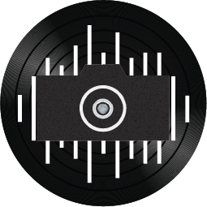
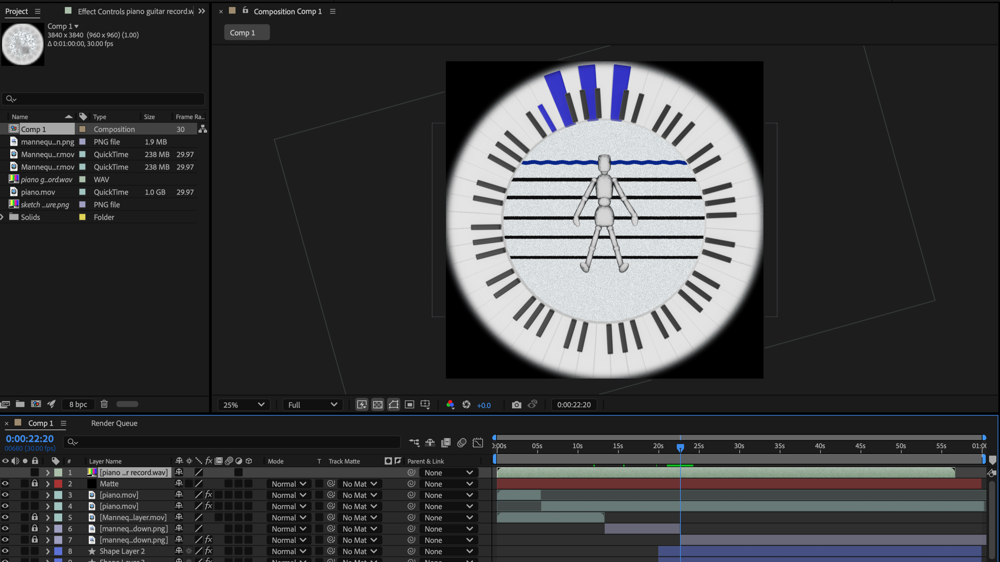
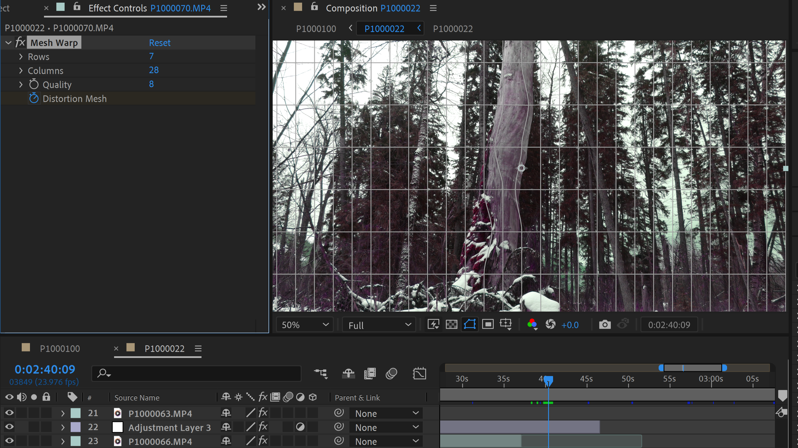
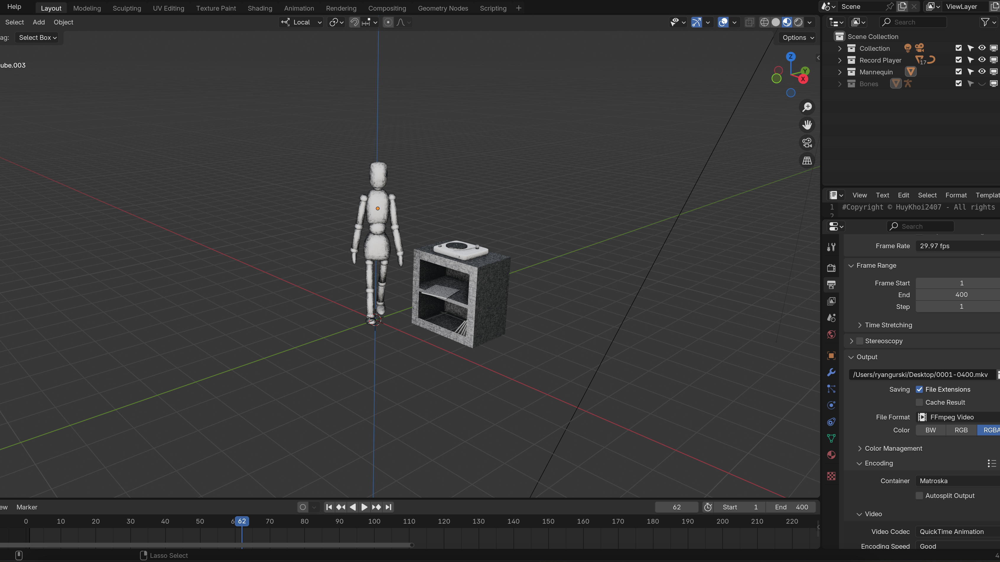
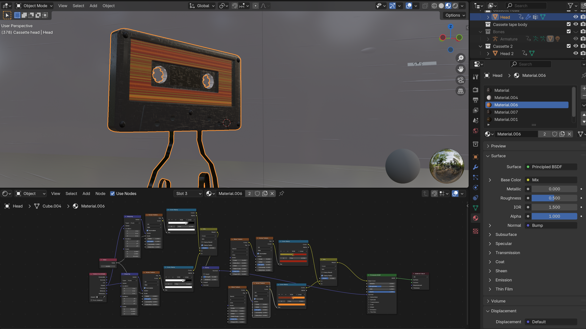
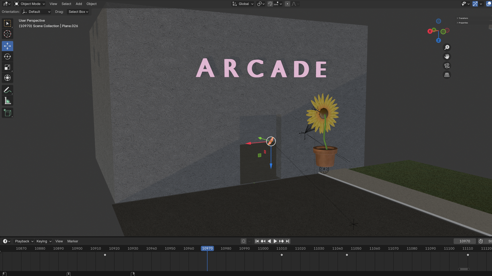
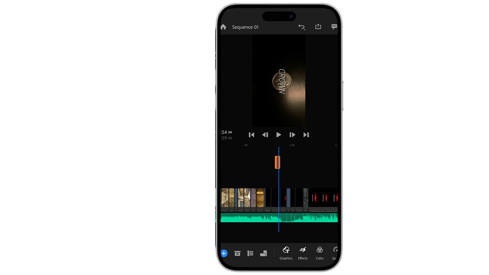

Hello, my name is Ryan Gurski. I specialize in video and audio, primarily in post production roles, although I possess other technical capabilities such as 3D modeling, animation, and web design. These skills have enhanced my creative ability in video creation: my experience with web design aided me in creating a web-based interactive video titled “Door Number 3,” which combines live-action footage with animation and visual effects. I also enjoy making exclusively 2D and 3D animated videos.





I am a recent graduate at the University of Lethbridge with a Bachelor of Fine Arts in New Media and a minor in General Music Studies.
My work has been featured on the University of Lethbridge’s New Media Student Showcase page for my interactive video, “
Door Number 3
,” as well as a one-minute animated video titled “
Broken Record
.” “Broken Record” was shown on a projection dome located at the
Nikka Yuko Japanese Gardens
, which is a traditional Japanese garden in Lethbridge, Alberta.
I have also recieved the Fine Arts Award of Excellence and Abbondanza Fine Arts Undergraduate Award during my studies.
My interest in video first sparked while taking an introductory New Media class.
It was the first time I was excited about school and eventually led me to take the jump into making it my focus of study.
This was during a time when classes were online and the feeling of isolation was present.
This feeling was a main theme of a video I made for this class, which was all shot and edited on an iPhone.
The process of recording, editing, and incorporating a collage of songs that were special to me at the time, even with the limited resources I had, made me realize this was the most enjoyable and meaningful way to creatively express myself.
From then on, my passion for video has continued and my technical and creative abilities have grown.

I enjoy sound design, writing, and recording original music. Music has always been a form of an creative expression for me, even prior to integrating it with visual art. I also learned a lot about scoring and production techniques by taking Digital Audio Arts classes in University. Some of the classes I took involved creating music for digital media as well as sound design and composition for video games. I believe taking these classes only strengthened my passion for both visual art and music.
I produced, mixed, and masterted the EP "Individualilty Complex" by Dani Payne, which is self-released on Bandcamp, YouTube, and through Tidal's direct uploads. The song "Habit" was selected as part of Tidal's Spotlight Program and added to a playlist by the editorial team. Cool stuff! I additionally make videos for Dani's YouTube channel and we have plans to continue releasing music together. The full EP can be heard on the Bandcamp player below, as well as some examples of my digital media scoring.
Producer Credits
Digital Audio Arts Projects
I choose to model my work with a strong emphasis on subjective interpretation: it is open-ended enough for the individual to derive their own interpretations, but still focused enough to point one in a specific direction of intent. Often abstract, but filled with hints that point to a general meaning, my videos embody this sentiment of finding a personalized interpretation of art. One of my favourite things to do is show others my videos without explanation and ask them what it means to them. If the responses are slightly varied and personalized, yet still follow my original intent, my goal of achieving this sense of interpretive art is met.
The processes and stylistic design which I gravitate towards influences my avenue of video creation to be focused on the connections between music and visuals. In my creative process, I use sound and original music to contribute to an expanded understanding of the visuals presented. Combining sound and video gives context to the meaning and creates a specific mood for my work. I often write music and then create my videos based on the structure and mood of the music, or I alternatively write music after completing the video with the intent of enhancing the visual and auditory experience. Including original music in my videos is essential in my work: one is not complete without the other.